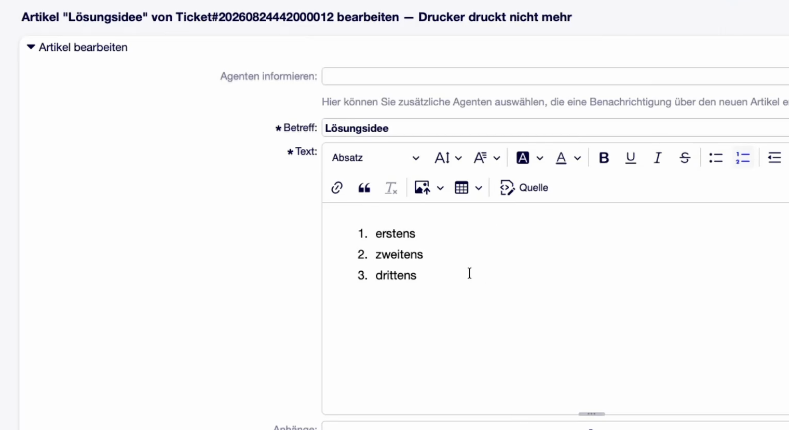
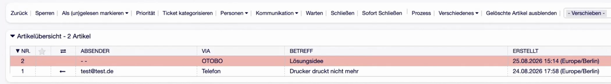
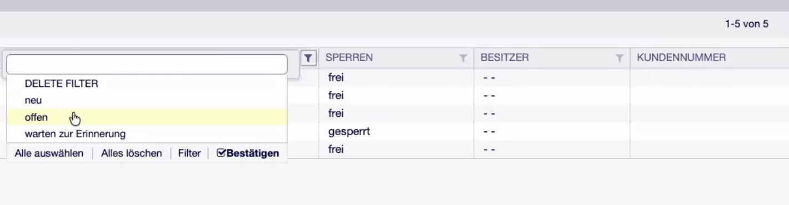
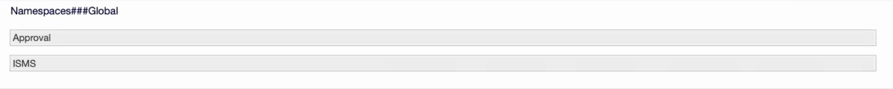
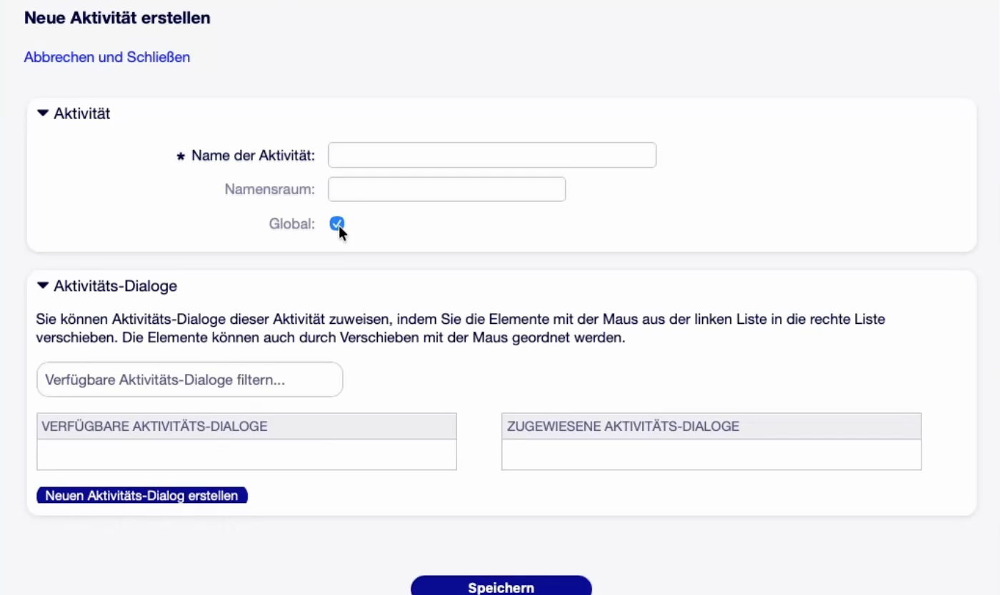
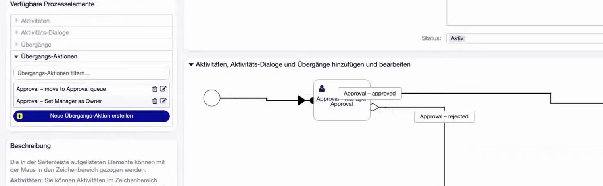
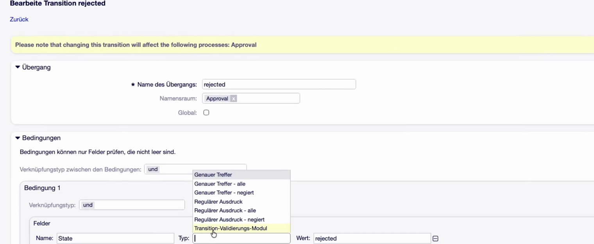
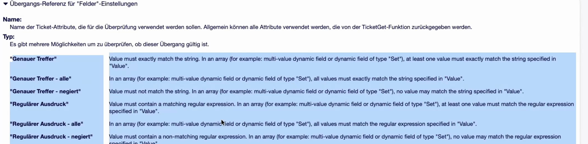

OTOBO 11.1 — Was ist neu¶
Diese Seite fasst die Neuerungen von OTOBO 11.1 zusammen: was dazugekommen ist, was sich im Verhalten ändert und worauf beim Upgrade eines bestehenden Systems zu achten ist.
Bemerkung
Stand: August 2026 — OTOBO 11.1 ist in der Beta-Phase. Der vollständige Release ist für die kommenden Monate angekündigt. Einzelne Beschriftungen und Übersetzungen sind noch nicht final; an ein, zwei Stellen ist derzeit noch ein Workaround nötig (siehe Upgrade und Betrieb). Die verbindliche Quelle bleiben die Release Notes von Rother OSS.
Auf einen Blick¶
Thema |
Worum es geht |
|---|---|
Mehr Überblick, schneller am Ziel — ähnliche Tickets, präzisere Suche, nachträglich bearbeitbare Artikel, Mehrfachfilter in den Übersichten. |
|
Präzise modellieren, sicher steuern — Namensräume und prozessspezifische Elemente räumen die Prozessverwaltung auf, Übergänge können deutlich mehr. |
|
Informationen genau dort, wo sie gebraucht werden — mehr Feldtypen in Sets, verkettbare Linsenfelder, Hide/Show an neuen Stellen. |
|
Moderne Authentifizierung, sichere Anbindung — OpenID Connect, zentrale OAuth-2-Verwaltung, verschlüsselte Datenbankverbindung. |
|
Datenaustausch deutlich vereinfacht — Multipart-Uploads, erzwingbare Arrays, Konfiguration als YAML exportieren, ganze Use Cases als Paket schnüren. |
|
Pflichtlektüre vor jedem Upgrade — die Ordnerstruktur wird neu angelegt, und die OAuth-2-Anbindungen müssen von Hand neu eingerichtet werden. |
Ein wiederkehrendes Motiv dieser Version: Zusatzpakete wandern in den Standard. Rother OSS hat 11.1 genutzt, um Funktionen, die seit 11.0 als Einzelpakete für Kunden entstanden sind, ins Framework aufzunehmen — Patch-Level bleiben für Fixes und Security-Releases reserviert, neue Funktionen brauchen ein Minor-Release. Wer bisher eines dieser Pakete eingesetzt hat, findet die Funktion künftig ohne Paket wieder — bei OAuth 2 allerdings mit Handarbeit, siehe Upgrade und Betrieb.
Ticketbearbeitung¶
Widget „Ähnliche Tickets“¶
In der Ticket-Zoom-Ansicht erscheint rechts unter den Ticket-Informationen ein neues Widget Ähnliche Tickets. Es zeigt über eine Annäherungssuche der Elasticsearch syntaktisch ähnliche Tickets an — hilfreich, um im laufenden Vorgang zu erkennen, ob dasselbe Problem noch anderswo aufgeschlagen ist, und um größere Störungen früher als solche zu erkennen.
Das Widget setzt eine laufende Elasticsearch voraus. Perspektivisch sollen die Vorschläge auch über die OTOBO-KI kommen; diese befindet sich derzeit ebenfalls in der Beta-Phase.
Erweiterte Suchsyntax¶
Die Elasticsearch-Suche ist nicht länger eine reine Volltextsuche. Begriffe
lassen sich mit AND und OR verknüpfen, und es gibt Filter, mit denen
gezielt in einzelnen Feldern gesucht wird — etwa nur im Titel oder nur im
Body. Damit lassen sich Suchen deutlich präziser formulieren als bisher.
Artikel bearbeiten, löschen und versionieren¶
Bislang waren Artikel aus Gründen der Revisionssicherheit unveränderlich. In 11.1 lassen sie sich nachträglich bearbeiten — revisionssicher, weil jede Änderung eine neue Version erzeugt und die vorherige Fassung im Artikel weiterhin einsehbar bleibt.
{kind=link}

Abb. 1 Der Dialog Artikel bearbeiten — Betreff und Text lassen sich ändern, optional werden weitere Agenten über die Änderung benachrichtigt.¶
Mitbearbeitet werden können auch Angaben, die bisher festgeschrieben waren:
Zeiteinheiten — nachträglich erfasste Zeit wird auf die bereits gebuchte aufaddiert (aus 15 Minuten werden nach einer Nachbuchung von 10 Minuten 25 Minuten).
Artikel-bezogene dynamische Felder.
Artikel lassen sich außerdem löschen. Sie werden dabei nicht wirklich entfernt, sondern in einen separaten Bereich der Datenbank verschoben. Über den Menüpunkt Gelöschte Artikel anzeigen werden sie wieder sichtbar und können von dort wiederhergestellt werden.
{kind=link}

Abb. 2 Die Artikelübersicht mit dem neuen Menüpunkt zum Ein- und Ausblenden gelöschter Artikel.¶
Artikel anpinnen¶
Ein angepinnter Artikel wird immer zuoberst angezeigt, unabhängig davon, wie viele Artikel danach noch dazukommen. Die Funktion ähnelt dem früheren Markieren, verwendet aber ein Stecknadel-Symbol statt der roten Markierung — und ersetzt sie in der Praxis. Typischer Einsatz: eine Zusammenfassungsnotiz oder eine Information, die im Ticketverlauf nicht untergehen darf.
Mehrfachauswahl in den Übersichtsfiltern¶
Die filterbaren Spalten der Ticket-Übersichten (Ansicht nach Queue, nach Service, nach Eskalation, Suchergebnisse …) akzeptieren jetzt mehrere Werte gleichzeitig. Damit lässt sich zum Beispiel in einem Schritt nach neu und offen filtern, oder nach mehreren Agenten beziehungsweise mehreren Services.
{kind=link}

Abb. 3 Der Spaltenfilter erlaubt jetzt die Auswahl mehrerer Werte; über Alle auswählen / Alles löschen / Bestätigen wird die Auswahl gesetzt.¶
Ein gesetzter Filter ist an der Umrandung und der dunkelgrauen Markierung der Spalte erkennbar; das Mülltonnen-Symbol verwirft alle gesetzten Filter auf einmal.
Prozessmanagement¶
Die Änderungen am Prozessmanagement sind die, die sich im Alltag von Consultants am deutlichsten bemerkbar machen — vor allem in Systemen mit mehreren Prozessen.
Namensräume für Prozesselemente¶
Die mit 11.0 für dynamische Felder eingeführten Namespaces gelten jetzt auch für Prozesselemente. Angelegt werden sie in der Systemkonfiguration, wahlweise für dynamische Felder, für das Prozessmanagement oder global für beides.
{kind=link}

Abb. 4 Namensräume in der Systemkonfiguration — hier die Einstellung
Namespaces###Global mit zwei Namensräumen.¶
Bemerkung
Ein Namensraum darf nur alphanumerische Zeichen enthalten und höchstens 64 Zeichen lang sein. Namensraum plus Feldname dürfen zusammen 190 Zeichen nicht überschreiten.
Beim Anlegen eines Prozesselements wird der Namensraum als eigenes Feld ausgewählt und dem Namen mit einem Bindestrich als Präfix vorangestellt.
{kind=link}

Abb. 5 Beim Anlegen einer Aktivität stehen die neuen Felder Namensraum und Global zur Verfügung.¶
Der Nutzen zeigt sich, sobald derselbe Elementname mehrfach vorkommt: Zwei
Aktivitätsdialoge namens Genehmigung — einmal für die Manager-, einmal für die
IT-Leiter-Genehmigung — sind in der Prozessverwaltung als
Manager – Genehmigung und IT-Leitung – Genehmigung sauber
auseinanderzuhalten. Der Agent im Ticket sieht weiterhin nur den hinteren
Teil, also die Beschriftung Genehmigung.
Global oder prozessspezifisch¶
Bisher waren Prozesselemente immer global: Jede Aktivität, jeder Aktivitätsdialog, jeder Übergang stand in allen Prozessen zur Auswahl. Das war praktisch für die Wiederverwendung, hat die Auswahllisten aber spätestens ab dem zweiten Prozess unbenutzbar lang gemacht.
In 11.1 ist das umgekehrt: Elemente sind standardmäßig prozessspezifisch und werden erst durch das Häkchen Global systemweit sichtbar. Ein Onboarding-Artikel bleibt damit im Onboarding-Prozess, während ein Allerwelts-Übergang wie „Queue ist gefüllt“ einmal global angelegt und überall wiederverwendet wird.
{kind=link}

Abb. 6 Die Seitenleiste Verfügbare Prozesselemente zeigt nur noch die Elemente dieses Prozesses plus die global markierten — hier zwei Übergangs-Aktionen statt einer langen Gesamtliste. Die Namensräume sind an den Präfixen im Diagramm zu erkennen.¶
Übergangsbedingungen: alle, irgendeiner, negiert¶
Bedingungen in Prozessübergängen konnten bisher gegen einen String oder einen regulären Ausdruck prüfen. Neu ist, dass beide Varianten in drei Abstufungen zur Verfügung stehen:
{kind=link}

Abb. 7 Die Auswahl Typ in der Übergangsbedingung. Oben im Dialog sind zugleich die neuen Felder Namensraum und Global zu sehen.¶
- Genauer Treffer
Mindestens ein Wert muss exakt dem angegebenen Wert entsprechen. Bei einem einfachen Feld ist das das bisherige Verhalten.
- Genauer Treffer – alle
Alle Werte müssen exakt entsprechen.
- Genauer Treffer – negiert
Kein Wert darf entsprechen.
- Regulärer Ausdruck / – alle / – negiert
Dasselbe Schema für reguläre Ausdrücke: mindestens einer, alle, oder keiner.
- Transition-Validierungs-Modul
Wie bisher, aber nicht mehr der voreingestellte erste Eintrag der Liste — das ist jetzt Genauer Treffer.
{kind=link}

Abb. 8 Neu im Übergangsdialog: eine Legende, die jede Option erklärt. (Die Übersetzung ins Deutsche stand zum Zeitpunkt der Beta noch aus.)¶
Die Abstufungen alle und negiert zielen auf Multi-Value-Felder — also dynamische Felder, bei denen Mehrfachwerte auf Ja steht und über Plus/Minus mehrere Werte erfasst werden (nicht zu verwechseln mit einem Mehrfachauswahl-Feld). Typische Anwendung:
alle — erst wenn alle Positionen auf Genehmigt stehen, geht es in den Prozessabschluss.
irgendeiner (die Grundvariante) — sobald eine Position auf geleistet steht, wird eine Zwischenrechnung gestellt.
negiert — prüft, dass ein Wert nicht zutrifft.
Tipp
Prüfen, ob ein Feld leer ist, geht damit endlich direkt: ein negierter
regulärer Ausdruck auf das Feld. Bisher war dafür ein Trick nötig — man prüfte
das Feld auf einen Wert, verknüpfte die Bedingung per XOR mit einer
Bedingung, die immer zutrifft (etwa „die Queue hat irgendeinen Wert“), und
kehrte die Aussage so um. Bei Prozessen mit zehn oder zwanzig zu prüfenden
Feldern brauchte man dafür teilweise mehrere Übergänge.
Weitere Änderungen¶
- Felder innerhalb von Sets ansprechbar
Verwendet ein Prozess dynamische Felder vom Typ Set, lassen sich jetzt auch die einzelnen Felder innerhalb des Sets direkt ansprechen. Das ging vorher nicht.
- Vorlagen in Prozessdialogen
In Prozessdialogen stehen jetzt Textvorlagen zur Verfügung — praktisch, wenn Texte vorbereitet werden sollen.
- Prozessinformation im Kundenbereich ausblendbar
Im Customer-Ticket-Zoom war bisher immer sichtbar, in welchem Prozess und welcher Aktivität sich ein Ticket befindet. Diese Anzeige lässt sich nun ausblenden, indem die entsprechenden dynamischen Felder der Kundenoberfläche nicht mehr zugeordnet werden.
- Bessere Sortierung
Prozesselemente werden in den Listen sinnvoll sortiert statt, wie bisher, in mehr oder weniger zufälliger Reihenfolge.
Dynamische Felder¶
Mehr Feldtypen in Sets¶
Drei Feldtypen, die bisher mit einer Fehlermeldung abgelehnt wurden, lassen sich jetzt innerhalb eines Dynamic Field Set verwenden:
Anhang (Dynamic Field Attachment)
Datenbank (Dynamic Field Database) — Einfach- oder Mehrfachauswahl, deren Werte aus einer Datenbankanbindung kommen
Webservice (Dynamic Field Webservice) — Einfach- oder Mehrfachauswahl, deren Werte über einen Webservice geholt und aufbereitet werden
Bemerkung
Das Dynamic Field Webservice dient der Bereitstellung von Auswahlwerten — es ist nicht dazu da, ein dynamisches Feld per Webservice zu aktualisieren. Dafür ist der Webservice selbst zuständig. Diese Verwechslung ist in der Praxis häufig.
Verkettbare Linsenfelder¶
Felder vom Typ Linse beziehen sich immer auf ein Referenzfeld und lesen von dort ein Attribut aus. Neu ist, dass das Ziel
ein Set sein darf, und
selbst wieder ein Referenzfeld sein darf.
Damit lassen sich Ketten bauen. Beispiel aus der CMDB: Ein Ticket referenziert einen Computer; im Computer steht in einem weiteren Referenzfeld das Betriebssystem, das selbst ein Config Item ist. Über eine Linse auf dieses Referenzfeld kommt man nun an die Attribute des Betriebssystems.
Hide/Show an neuen Stellen¶
Die per ACL gesteuerte Hide/Show-Funktionalität, mit der dynamische Felder ein- und ausgeblendet werden, funktioniert jetzt zusätzlich
innerhalb von Sets — in einem Netzwerkkarten-Set kann das Ausfüllen der IPv4-Adresse ein weiteres Feld einblenden, das sonst verborgen bleibt;
im Antworten-Dialog (
AgentTicketCompose) — dafür war bisher ein Zusatzpaket nötig.
Sicherheit¶
OTOBO- und Docker-Releases entkoppelt¶
Die Releases von OTOBO und der Docker-Umgebung sind künftig voneinander unabhängig. Ein Docker-Release lässt sich installieren, ohne OTOBO zu aktualisieren — und umgekehrt. Man muss nicht länger auf das jeweils andere Element warten.
MariaDB und verschlüsselte Datenbankverbindung¶
OTOBO wechselt von MySQL zu MariaDB; der Datenbank-Container ist damit in
jedem Fall eine MariaDB. Zusätzlich lässt sich die Verbindung zur Datenbank
verschlüsseln — konfiguriert wird das in der Kernel/Config.pm.
OpenID Connect¶
OpenID Connect steht als Single-Sign-on-Verfahren für Agenten und Kunden zur Verfügung — etwa gegen Keycloak oder vergleichbare Identity Provider, bei denen die relevanten Informationen im Token mitgegeben werden.
Zentrale OAuth-2-Token-Verwaltung¶
Die Verwaltung von OAuth-2-Tokens ist neu umgesetzt und liegt jetzt zentral im Admin-Bereich statt in der Systemkonfiguration. Sie deckt ab:
Mail-Empfang über POP3 und IMAP — bisher über das Zusatzpaket MailAccount OAuth2
Mail-Versand über SMTP — neu, und mit Blick auf die von Microsoft angekündigte Umstellung praktisch relevant
Webservices — bisher über das Zusatzpaket OAuth2
Beide Zusatzpakete gehen damit im Standard auf.
Warnung
Das ist eine der beiden Stellen, an denen ein Upgrade Handarbeit erfordert. Details unter Upgrade und Betrieb.
Datenaustausch und Integration¶
Webservices¶
- Multipart/form-data für Anhänge
Anhänge können jetzt nicht nur Base64-kodiert, sondern auch als
multipart/form-dataverschickt werden. Gegenstellen wie Jira und OpenProject nehmen Anhänge nicht Base64-kodiert entgegen — mit dem neuen Verfahren funktioniert die Übertragung ohne Umwege.- Arrays im XSLT-Mapping erzwingen
Erwartet die Gegenstelle ein Array, OTOBO liefert aber einen einfachen Wert, lässt sich die Array-Form jetzt erzwingen. Der bisherige Trick — denselben Wert doppelt ins XSLT-Mapping schreiben, damit OTOBO ein Array daraus baut — entfällt.
- OAuth 2 als Authentifizierung
Siehe Sicherheit.
Import und Export von Objekten¶
Der Import/Export deckt deutlich mehr Objekte ab als bisher, darunter Tickets (vorher ein Zusatzpaket) und Kunden.
Konfiguration exportieren¶
Konfigurationsobjekte lassen sich als YAML-Datei exportieren und auf einem anderen System importieren — etwa die Queue-Struktur oder der Servicekatalog, so wie man es von ACLs bereits kennt. Exportiert wird dabei nicht nur das Objekt selbst, sondern auch, was daran hängt: Eskalationszeiten, zugeordnete Gruppen und Ähnliches.
Konfigurationspakete¶
Mehrere Konfigurationsobjekte lassen sich zu einem Konfigurationspaket bündeln — Prozesse, dynamische Felder, Benachrichtigungen, ACLs, Queues und weitere — und gemeinsam exportieren.
Damit lässt sich ein ganzer Use Case paketieren. Zwei Beispiele aus der Praxis:
Ein Anbieter stellt Systeme für verschiedene Partnereinrichtungen bereit und spielt statt einzelner YAML-Dateien für Queues, Felder, Oberflächen und Benachrichtigungen genau ein Konfigurationspaket ein.
Ein Konzern erarbeitet einmal eine Grundkonfiguration und stellt sie den Schwester- und Tochtergesellschaften bereit, ohne das komplette System zu kopieren.
Upgrade und Betrieb¶
Zwei Punkte betreffen jedes bestehende System und müssen vor dem Upgrade bedacht werden.
Die Ordnerstruktur wird neu angelegt¶
Warnung
Beim Upgrade auf 11.1 wird die Ordnerstruktur von OTOBO komplett neu
angelegt. Alle alten Dateien werden dabei verworfen — mit Ausnahme der
Kernel/Config.pm.
Alles, was an einem System von Hand angepasst oder ergänzt wurde, muss deshalb vorher in ein kundenspezifisches Paket wandern. Betroffen ist unter anderem:
Bilder und Logos für den Kundenbereich, Favicons
angepasste Template-Dateien (etwa ein
AgentTicketPhone.tt, in dem früher ein Feld ausgeblendet wurde — heute löst man das eher über die Auto-Select-Mechanik)alle sonstigen Dateien, die es im Standard nicht gibt
Am Ende der Upgrade-Routine läuft ein Paket-Reinstall, der die Dateien aus dem eigenen Paket wieder an ihren Platz legt. Ohne Paket sind die Anpassungen nach dem Upgrade schlicht weg.
Ein eigenes Paket schnüren¶
Die Anleitung steht im OTOBO-Entwicklerhandbuch unter How to publish your OTOBO extensions. Kurzfassung:
Eine
.sopm-Datei anlegen. Die oberen Abschnitte (Framework, Name, Version …) genügen;DatabaseInstallund Ähnliches wird in aller Regel nicht gebraucht.Alle angepassten Dateien mit dem richtigen Dateityp in die
<Filelist>eintragen.Paket bauen und installieren:
bin/otobo.Console.pl Dev::Package::Build <Paket>.sopm <Zielverzeichnis> bin/otobo.Console.pl Admin::Package::Install <Paket>.opm
Der Aufwand fällt einmal an — danach überstehen die Anpassungen jedes weitere Upgrade.
OAuth-2-Anbindungen neu einrichten¶
Weil die Funktionalität aus zwei getrennten Paketen (OAuth2 und MailAccount OAuth2) in den Standard überführt wurde, lassen sich die bestehenden Systemkonfigurations-Einstellungen nicht eins zu eins migrieren.
Warnung
Nach dem Upgrade müssen alle OAuth-2-Anbindungen im neuen Admin-Bereich von Hand neu angelegt werden — inklusive der Zwei-Faktor-Authentifizierung gegenüber dem Identity Provider. Das ist mit den Kunden zu terminieren, nicht nebenbei zu erledigen.
Zusätzlich war zum Zeitpunkt der Beta noch ein Workaround nötig, dessen Reihenfolge eingehalten werden muss:
Das Paket OAuth2 installieren, falls noch nicht vorhanden.
Die Einstellungen übertragen.
Das Paket MailAccount OAuth2 deinstallieren.
Erst danach das Upgrade auf 11.1 durchführen.
Rother OSS dokumentiert diesen Schritt noch; ob er im finalen Release entfällt, war zum Redaktionsschluss offen. Die aktuelle Fassung der Upgrade-Anleitung ist deshalb in jedem Fall vor dem Upgrade zu prüfen.
Offene Punkte aus der Beta¶
Die folgenden Punkte waren zum Zeitpunkt der Vorstellung ungeklärt und sollten vor einem produktiven Upgrade nachgeprüft werden.
- Import dynamischer Felder aus YAML
Aus dem Partnerkreis wurde berichtet, dass der YAML-Import dynamischer Felder in 11.1 stillschweigend fehlschlägt: keine Fehlermeldung, aber die Felder sind danach weder in der Oberfläche noch in der Datenbank. In 11.0 funktionierte derselbe Export/Import. Rother OSS war das nicht bekannt; als mögliche Ursache wurde genannt, dass ein Feld aus einem Paket stammt, das auf dem Zielsystem nicht installiert ist. Ein Blick ins Log wurde empfohlen.
- Linse auf Linse
Ob sich ein Linsenfeld auf ein weiteres Linsenfeld richten lässt (und man so einen zusätzlichen Hop machen kann — Ticket → Computer → Vertrag → Attribut), konnte nicht verbindlich beantwortet werden. An den Linsenfeldern wird im Rahmen eines Kundenprojekts weiter gearbeitet; einige Punkte stehen noch auf der Liste.
- Übersetzungen
Einzelne Beschriftungen sind in der Beta noch englisch oder unübersetzt — etwa der Eintrag DELETE FILTER im Spaltenfilter und die Legende im Übergangsdialog.
Quelle¶
Diese Zusammenfassung beruht auf der Partner-Vorstellung von OTOBO 11.1 durch Rother OSS am 25. August 2026 sowie den zugehörigen Release Notes. Verbindlich sind die offizielle Dokumentation unter doc.otobo.org und die Release Notes von Rother OSS.
Fragen zum Release beantwortet Rother OSS unter partner@otobo.io.